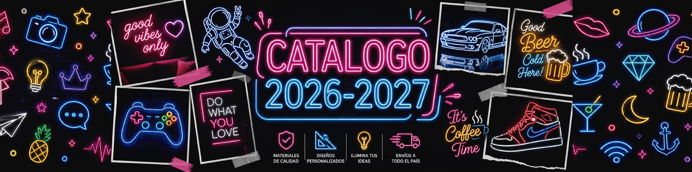
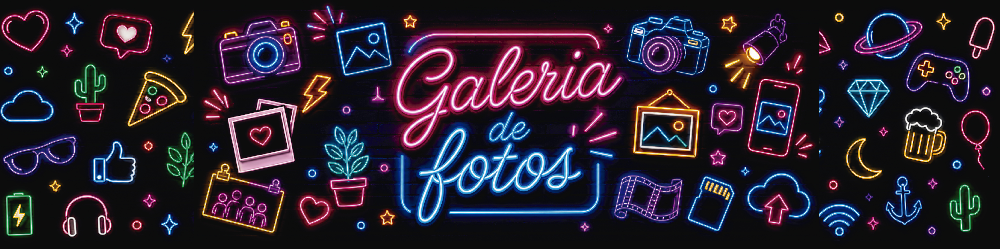
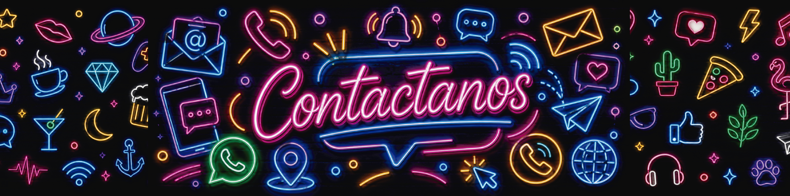
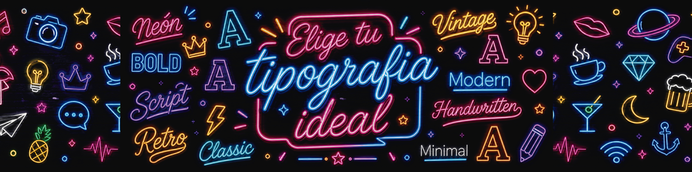
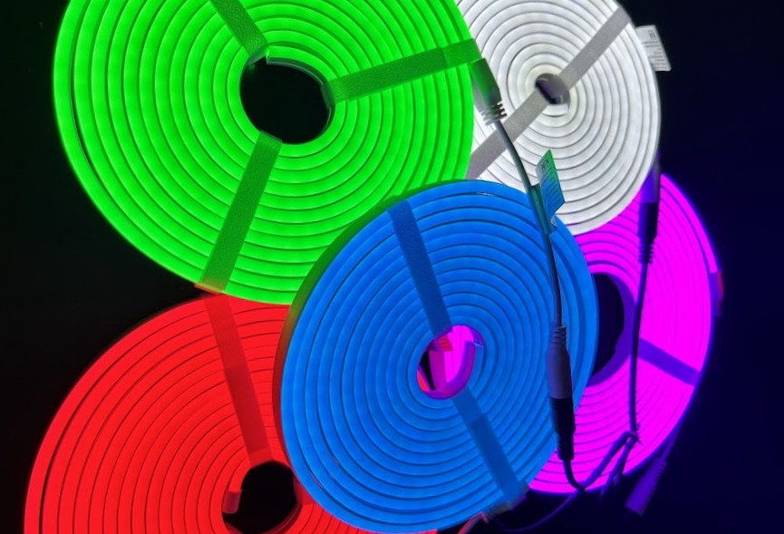
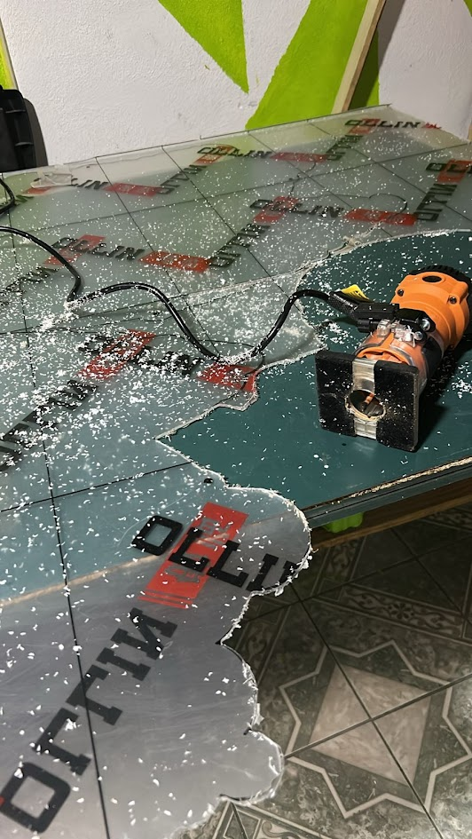
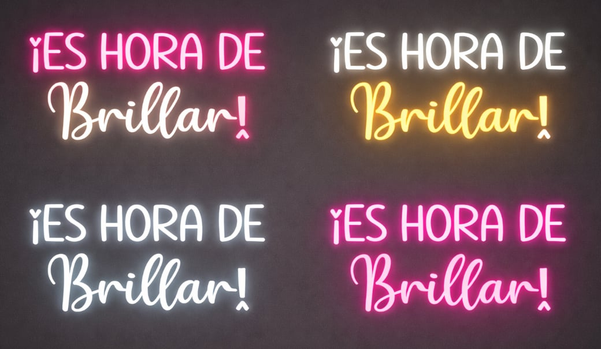
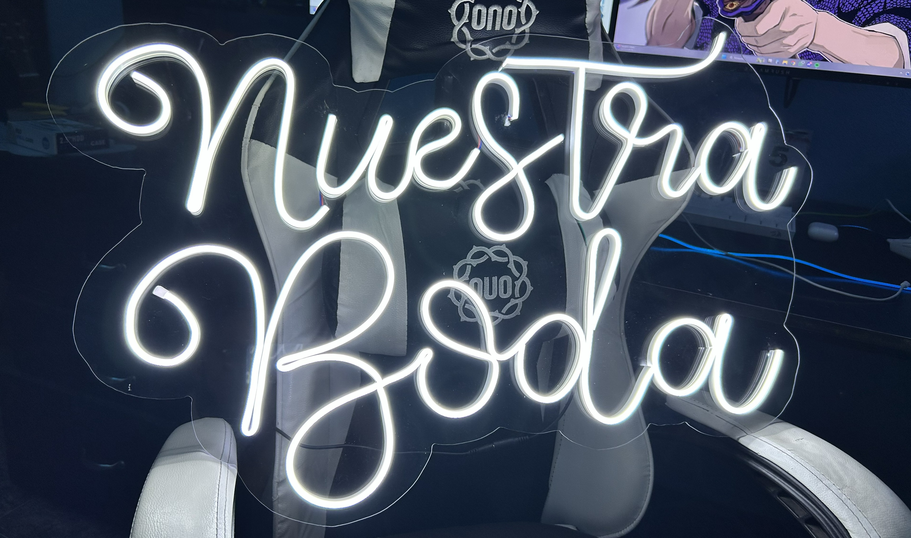
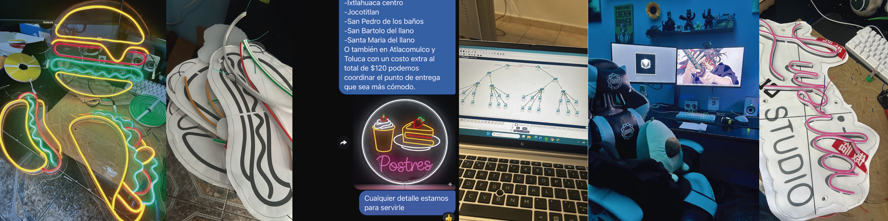

En nuestro taller transformamos ideas en piezas visuales únicas que no solo iluminan espacios, sino que crean experiencias. Cada letrero neón que fabricamos está pensado para destacar, llamar la atención y transmitir emociones, ya sea en un evento especial, en tu negocio o en un rincón personal que quieras hacer inolvidable.
No se trata solo de un producto decorativo, sino de una forma moderna y elegante de comunicar, de darle identidad a un espacio y de crear un punto visual que realmente conecte con las personas.
A diferencia del neón clásico de vidrio, nuestras tiras son flexibles, resistentes y seguras al tacto, lo que las hace ideales para hogares, eventos y negocios sin preocuparte por fragilidad o riesgos.

Trabajamos con tiras neón LED de alta calidad, utilizando la marca Genxing, reconocida por su excelente rendimiento, intensidad de luz uniforme y gran durabilidad. Este tipo de tecnología nos permite ofrecer un acabado tipo neón tradicional, pero con todas las ventajas actuales: menor consumo energético, mayor seguridad y una vida útil mucho más larga.
A diferencia del neón convencional, nuestras tiras LED son flexibles, resistentes y seguras, lo que permite crear diseños más complejos sin comprometer la calidad ni la estética del resultado final.
Cada diseño se monta cuidadosamente sobre una base de acrílico, logrando un acabado limpio, moderno y profesional. Este material no solo aporta estética, sino también firmeza y durabilidad, permitiendo que tu letrero conserve su forma y presencia con el paso del tiempo.
Además, el acrílico puede adaptarse a diferentes estilos: transparente para un look minimalista o con formas personalizadas para reforzar el diseño y hacerlo aún más atractivo.


Sabemos que cada cliente busca algo único, por eso trabajamos contigo desde la idea inicial hasta el resultado final. Puedes elegir frases, nombres, logotipos o cualquier concepto que tengas en mente. Ajustamos tipografías, colores, tamaños y estilos para que el resultado refleje exactamente lo que deseas.
Nuestro objetivo es que cada pieza sea exclusiva, diseñada para representar tu personalidad, tu marca o ese momento especial que quieres destacar.
Más que fabricar un letrero, creamos una pieza que conecta contigo. Nos enfocamos en cada detalle para lograr un equilibrio entre estética, iluminación y diseño, asegurando que el resultado no solo cumpla tus expectativas, sino que las supere.
Los letreros neón son una opción versátil y moderna que se adapta a cualquier entorno donde busques destacar. No solo iluminan un espacio, sino que crean una atmósfera única que atrae miradas y genera impacto visual inmediato.
Son ideales para distintas situaciones donde quieres que un mensaje, nombre o diseño tenga presencia:
Un letrero neón no pasa desapercibido. Es una pieza que ilumina, decora y comunica al mismo tiempo, convirtiéndose en el centro de atención en cualquier lugar donde se coloque.
Si buscas algo diferente, moderno y con personalidad, un diseño neón es la elección perfecta para darle vida a cualquier espacio.


Somos un emprendimiento enfocado en la creación de letreros neón personalizados que transforman espacios y momentos en experiencias únicas. Cada diseño que realizamos está pensado para destacar, ya sea en eventos, negocios o como un detalle especial que deje huella.
Detrás de este proyecto se encuentra Eleazar García Pérez, originario de Santa Cruz Tepexpan, Jiquipilco, Estado de México, estudiante de ingeniería y apasionado por la tecnología, el diseño y la innovación. Este emprendimiento nace de la combinación entre creatividad y conocimiento técnico, buscando ofrecer productos modernos, funcionales y visualmente impactantes.
A lo largo de nuestro crecimiento, hemos trabajado con distintos clientes, perfeccionando cada proceso y aprendiendo en cada proyecto. Nos hemos enfocado en mejorar constantemente, ofreciendo no solo un producto, sino una experiencia completa basada en atención personalizada, calidad en materiales y compromiso en cada entrega.
Nuestro objetivo es seguir creciendo, innovando y llevando la iluminación neón a nuevos niveles, ayudando a cada cliente a expresar su estilo, identidad o momento especial a través de un diseño único.
Hoy en día, seguimos trabajando con la misma pasión con la que comenzamos, cuidando cada detalle y ofreciendo un servicio cercano, confiable y de calidad.
💡 ¿Tienes una idea en mente? Nosotros la hacemos brillar.
Realizamos entregas...
También realizamos entregas en Atlacomulco y Toluca con un costo extra de $120.